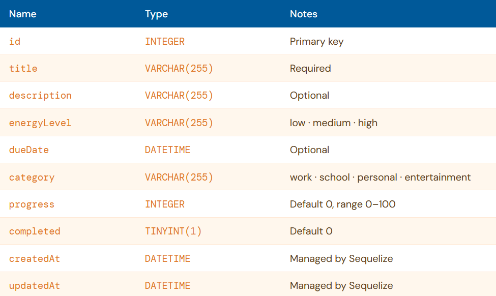
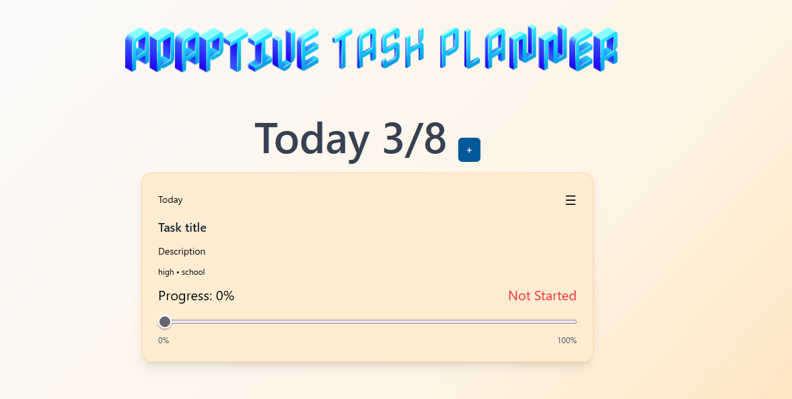

When I first started, I decided to use mongoDB as my database, but after doing some research I found out that it wouldn't be the best option for my project. Since I am storing structured task data and do not require the scalability of a NoSQL database, I decided to switch to SQLite. I switched to SQLite as it is lightweight and accomplishes what I need for my project. Tailwind CSS was also added to the project to make styling easier and faster.

The SQL database stores task ID, title, description, energy level required to complete the task, due date, category of task, progress percentage, and completion status of the task. I used Sequelize as an ORM to interact with the database.

I have created the a functional to-do list application that allows users to create, read, update, and delete tasks. The application also has a progress tracking feature that allows users to track the progress of their tasks. Currently, I am working on implementing the adaptive task scheduling feature that will allow users to receive recommendations based on their energy levels.